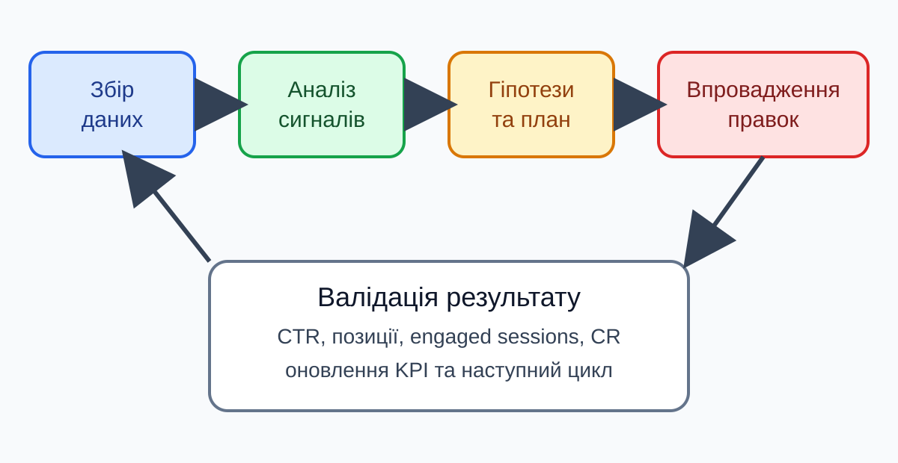
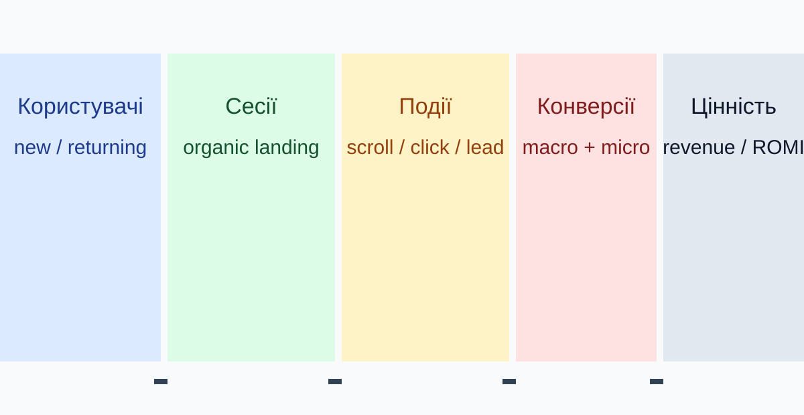
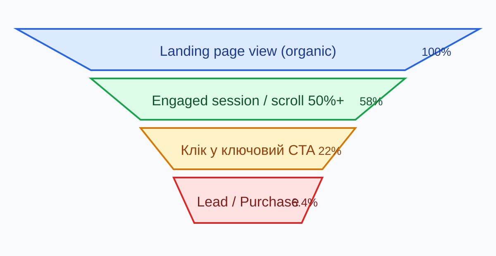
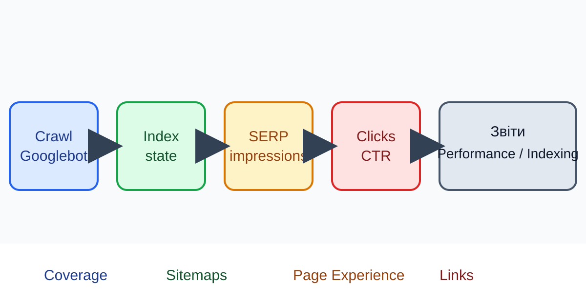
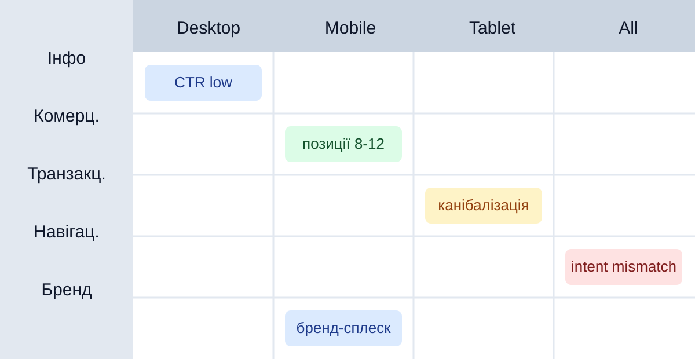
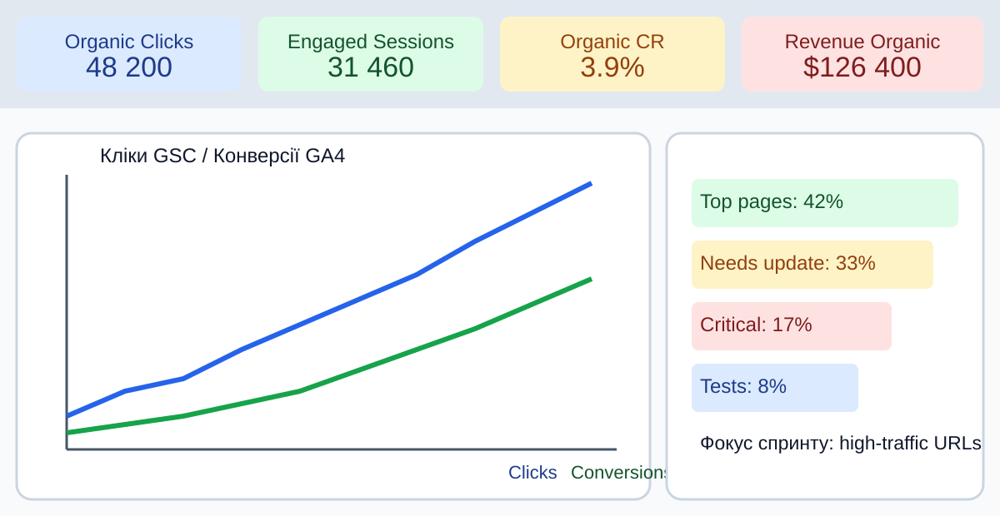
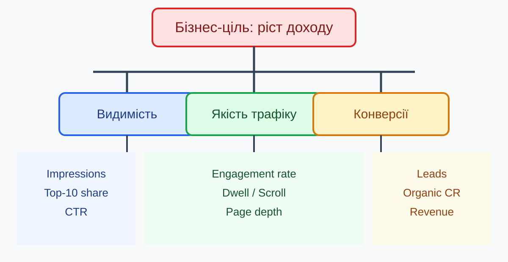
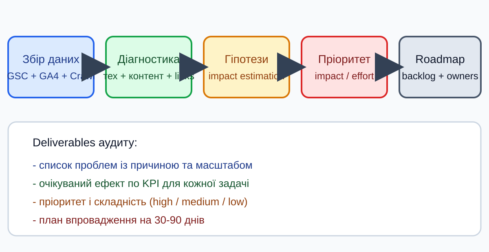
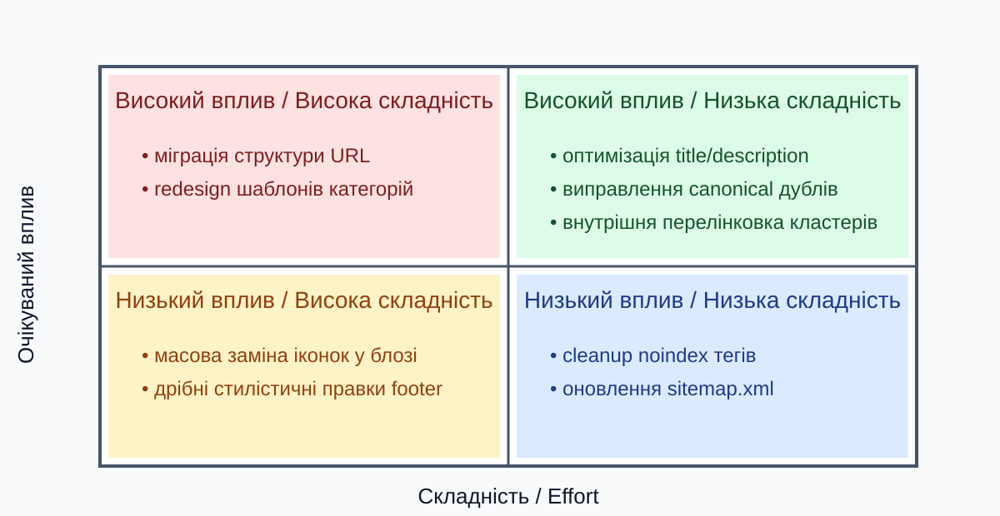
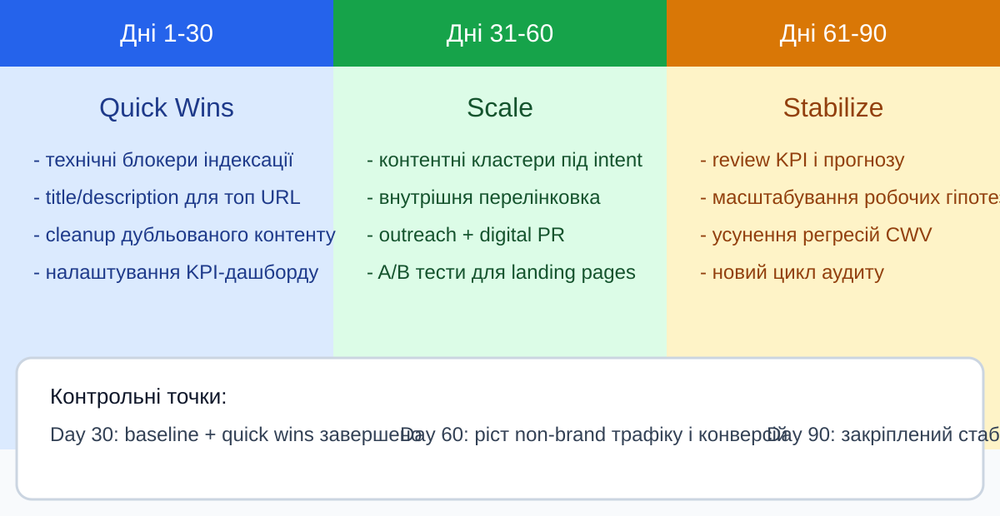

GA4 показує, що відбувається після переходу користувача на сайт.

| Група | Події | Навіщо для SEO | Що контролювати |
|---|---|---|---|
| Engagement | scroll, user_engagement | Якість споживання контенту | Частка engaged sessions |
| Навігація | view_search_results, click | Чи знаходять наступний крок | Переходи вглиб сайту |
| Ліди | generate_lead, form_submit | Внесок SEO в заявки | CR з органіки по landing page |
| E-commerce | add_to_cart, purchase | Внесок SEO в дохід | Revenue / organic session |

Google Search Console відповідає на питання, що відбувається до кліку у пошуку.

| Звіт | Що бачимо | SEO-сигнал | Типова дія |
|---|---|---|---|
| Performance | Запити, сторінки, CTR, позиції | Видимість і попит | Оновити сніпети, intent-match |
| Indexing | Неіндексовані URL та причини | Втрачений потенціал трафіку | Виправити canonical/robots |
| Experience | Core Web Vitals, mobile usability | Ризик поганого UX | Пріоритет технічних правок |
| Links | Внутрішні та зовнішні лінки | Сигнали авторитету | Аудит профілю і перелінковки |



| Рівень | Приклади KPI | Частота | Власник |
|---|---|---|---|
| Видимість | Impressions, Top-10 share, non-brand clicks | Щотижня | SEO спеціаліст |
| Якість трафіку | Engagement rate, scroll depth, bounce context | Щотижня | SEO + UX |
| Конверсії | Leads, Purchases, Organic CR | Щотижня/щомісяця | SEO + аналітик |
| Бізнес-ефект | Revenue, CAC, ROMI по organic | Щомісяця | Маркетинг lead |
SEO-аудит - системна перевірка технічного стану, контенту, структури та зовнішніх сигналів.


